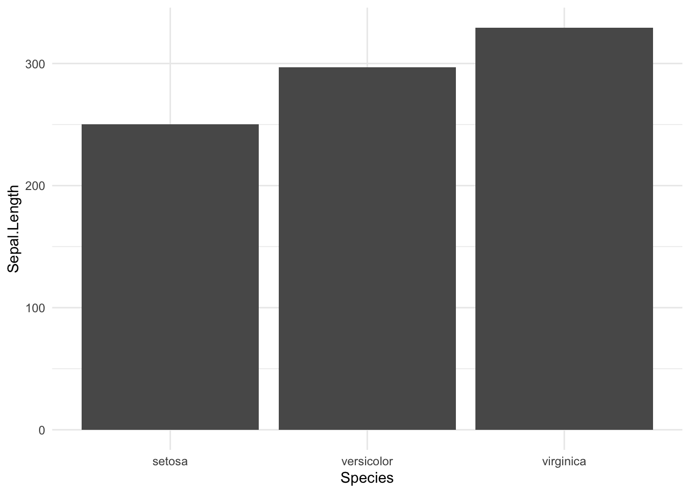
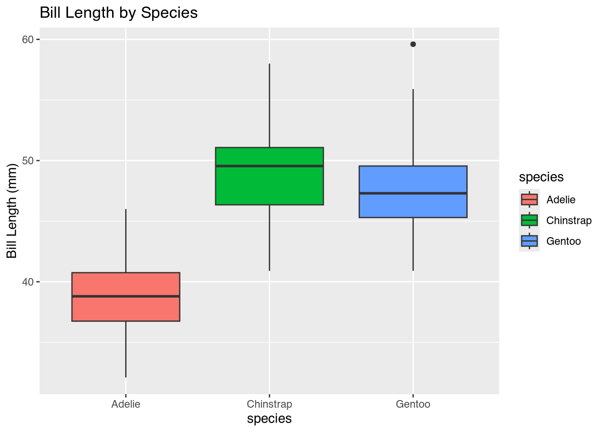
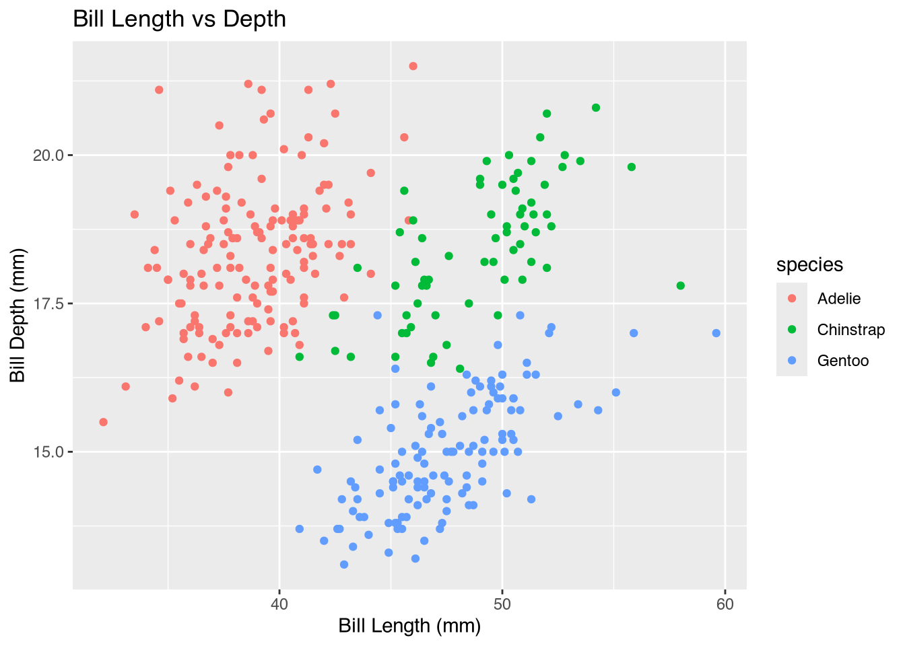

Section 3 Descriptive Statistics.
Descriptive statistics summarize and organize data. They help us understand patterns and key characteristics in a dataset.
We’ll explore basic concepts using the penguins dataset from the palmerpenguins package.
3.1 The penguins Dataset
library(tidyverse)
library(palmerpenguins)
library(kableExtra)
data("penguins")
kbl(head(penguins, n = 4))| species | island | bill_length_mm | bill_depth_mm | flipper_length_mm | body_mass_g | sex | year |
|---|---|---|---|---|---|---|---|
| Adelie | Torgersen | 39.1 | 18.7 | 181 | 3750 | male | 2007 |
| Adelie | Torgersen | 39.5 | 17.4 | 186 | 3800 | female | 2007 |
| Adelie | Torgersen | 40.3 | 18.0 | 195 | 3250 | female | 2007 |
| Adelie | Torgersen | NA | NA | NA | NA | NA | 2007 |
3.2 Basic Data Exploration
## [1] 344 8## tibble [344 × 8] (S3: tbl_df/tbl/data.frame)
## $ species : Factor w/ 3 levels "Adelie","Chinstrap",..: 1 1 1 1 1 1 1 1 1 1 ...
## $ island : Factor w/ 3 levels "Biscoe","Dream",..: 3 3 3 3 3 3 3 3 3 3 ...
## $ bill_length_mm : num [1:344] 39.1 39.5 40.3 NA 36.7 39.3 38.9 39.2 34.1 42 ...
## $ bill_depth_mm : num [1:344] 18.7 17.4 18 NA 19.3 20.6 17.8 19.6 18.1 20.2 ...
## $ flipper_length_mm: int [1:344] 181 186 195 NA 193 190 181 195 193 190 ...
## $ body_mass_g : int [1:344] 3750 3800 3250 NA 3450 3650 3625 4675 3475 4250 ...
## $ sex : Factor w/ 2 levels "female","male": 2 1 1 NA 1 2 1 2 NA NA ...
## $ year : int [1:344] 2007 2007 2007 2007 2007 2007 2007 2007 2007 2007 ...3.3 Summary Statistics
## species island bill_length_mm bill_depth_mm
## Adelie :152 Biscoe :168 Min. :32.10 Min. :13.10
## Chinstrap: 68 Dream :124 1st Qu.:39.23 1st Qu.:15.60
## Gentoo :124 Torgersen: 52 Median :44.45 Median :17.30
## Mean :43.92 Mean :17.15
## 3rd Qu.:48.50 3rd Qu.:18.70
## Max. :59.60 Max. :21.50
## NA's :2 NA's :2
## flipper_length_mm body_mass_g sex year
## Min. :172.0 Min. :2700 female:165 Min. :2007
## 1st Qu.:190.0 1st Qu.:3550 male :168 1st Qu.:2007
## Median :197.0 Median :4050 NA's : 11 Median :2008
## Mean :200.9 Mean :4202 Mean :2008
## 3rd Qu.:213.0 3rd Qu.:4750 3rd Qu.:2009
## Max. :231.0 Max. :6300 Max. :2009
## NA's :2 NA's :23.4 Central Tendency
- Mean: average value
- Median: middle value
- Mode: most frequent value
## [1] 43.92193## [1] 44.453.5 Variability
- Range: difference between max and min
- Variance: spread of the data
- Standard deviation: square root of variance
## [1] 32.1 59.6## [1] 29.80705## [1] 5.4595843.6 Grouped Summaries
# Grouped mean by species
library(dplyr)
penguins %>%
group_by(species) %>%
summarise(mean_bill_length = mean(bill_length_mm,
na.rm = TRUE))## # A tibble: 3 × 2
## species mean_bill_length
## <fct> <dbl>
## 1 Adelie 38.8
## 2 Chinstrap 48.8
## 3 Gentoo 47.53.7 Visualization: Histograms
library(ggplot2)
ggplot(penguins, aes(x = bill_length_mm)) +
geom_histogram(bins = 30, fill = "skyblue",
color = "black") + labs(title = "Bill Length Distribution",
x = "Bill Length (mm)")
3.8 Boxplots for Group Comparison
ggplot(penguins, aes(x = species, y = bill_length_mm,
fill = species)) + geom_boxplot() + labs(title = "Bill Length by Species",
y = "Bill Length (mm)")
3.10 Scatter Plot for Relationships
ggplot(penguins, aes(x = bill_length_mm,
y = bill_depth_mm, color = species)) +
geom_point() + labs(title = "Bill Length vs Depth",
x = "Bill Length (mm)", y = "Bill Depth (mm)")
3.11 Conclusion
- Descriptive statistics are fundamental for understanding data.
- R provides powerful tools to calculate, visualize, and interpret data patterns.
Questions?
Sources in this link